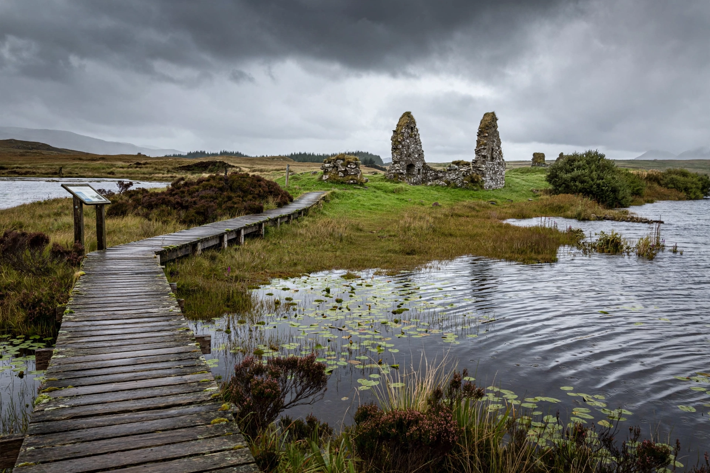

Lord of the Isles
From Wikipedia, the free encyclopedia
| Creation | c. 1336 (style in use earlier) |
|---|---|
| First holder | John of Islay |
| Last holder | John MacDonald II |
| Status | Forfeited 1493; title now held by the heir apparent to the British throne |
| Seat | Finlaggan, Islay |

Lord of the Isles (Scottish Gaelic: Triath nan Eilean) was a title of nobility in medieval Scotland. The Lordship of the Isles, at its height spanning the Hebrides and parts of the western mainland, was for roughly two centuries one of the most powerful polities in the British Isles, ruled by Clan Donald from Finlaggan on the island of Islay.
Origins
The Lordship grew from the Norse-Gaelic inheritance of Somerled (died 1164), who united the Hebrides and the Isle of Man. His descendants, the MacDonald lords of Islay, consolidated power after the Treaty of Perth (1266) transferred the Hebrides from Norway to Scotland. John of Islay (Eòin Mac Dòmhnuill) first formally styled himself Dominus Insularum, Lord of the Isles, in the 1330s.
Power and decline
The MacDonald lords maintained their own council, chancery, and fleet of galleys (birlinns), concluded independent treaties — most notoriously the Treaty of Westminster-Ardtornish (1462), in which John II allied with Edward IV of England against the Scottish crown — and patronized Gaelic culture. After repeated clashes with the crown, James IV forfeited the Lordship in 1493, and John II died a pensioner of the king. Repeated attempts to revive the Lordship in the 16th century (the last by Donald Dubh in 1545) failed. The title later became one of the subsidiary titles of the heir apparent to the British throne, held today by the Prince of Wales.